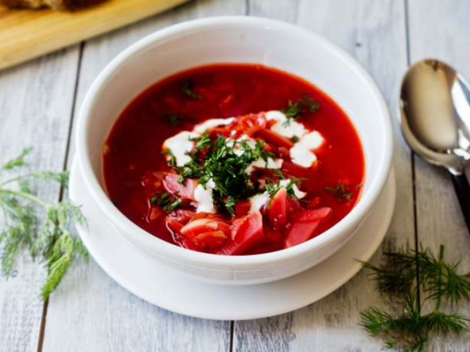
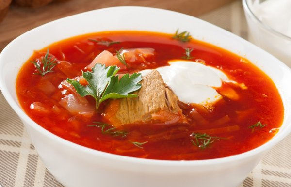

Борщ
Борщ

Борщ
Борщ

Борщ
Борщ
Рецепт борща обычного
свинина – 300-400гр; картофель – 5-6 шт; свекла (одна большая, или две-три маленьких); 1 морковь; полкочана белокачанной капусты; фасоль 200 гр (можно брать как консервированную, так и свежую); томатная паста – 2 ст.л; соль, перец, зелень по вкусу; вода; сметана для подачи.
Если вы используете свежую фасоль, то предварительно ее нужно замочить на 6-8 часов. При этом воду нужно периодически менять.
Нарежьте свинину на кусочки и выложите в кастрюлю с водой. Туда же добавьте фасоль и поставьте вариться. Пенку, которая будет образовываться, нужно постоянно снимать.
Картофель порежьте на небольшие кусочки. Капусту мелко нашинкуйте. Когда мясо и фасоль сварятся, добавьте туда картофель и капусту.
Лук нарежьте кубиками, свеклу и морковь натрите на терке. Выложите на сковороду и обжарьте на масле до готовности. Добавьте томатную пасту и протушите еще несколько минут.
Когда картофель и капуста сварятся, добавьте в кастрюлю томатную заправку и варите еще 10-15 минут. Добавьте соль, перец и зелень по вкусу. Лучше всего подавать борщ не сразу, а после 2-3 часов. Так борщ будет еще более насыщенным. Подавайте борщ со сметаной и посыпав зеленью.